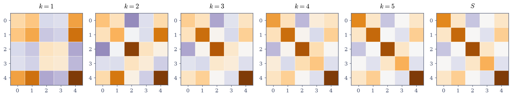
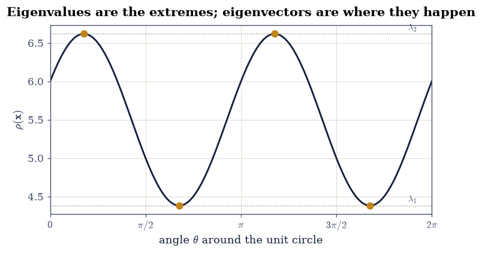
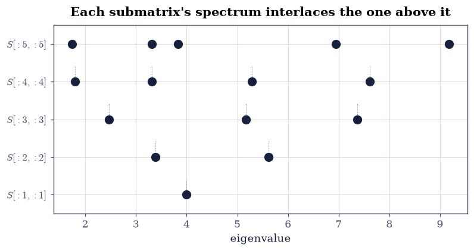
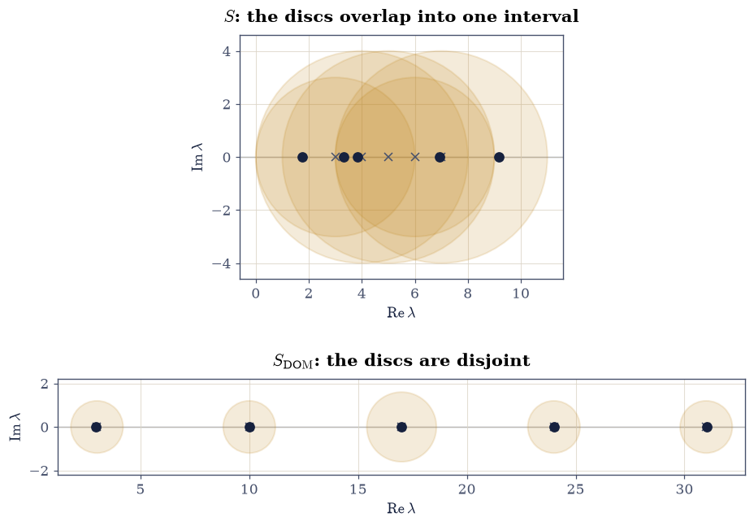
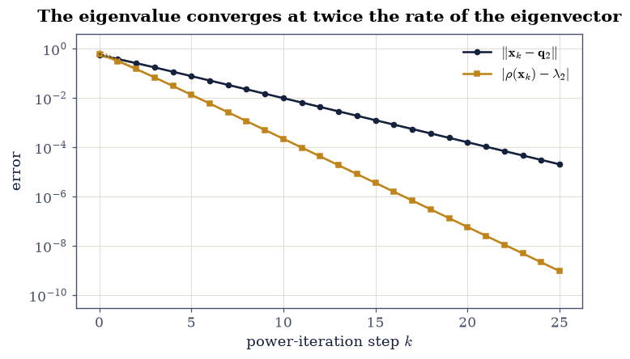

3.2 Symmetric Matrices and the Spectral Theorem#
Notebook overview#
§3.1 left a list of things that can go wrong: eigenvalues that turn out complex, eigenvectors that are not orthogonal, an eigenvector matrix so badly conditioned that Eq. 145 stops meaning anything, and a matrix with too few eigenvectors to diagonalize at all. Every one of those disappears under a single hypothesis, \(A = A^{\top}\).
The spectral theorem says a real symmetric matrix has real eigenvalues and an orthonormal basis of eigenvectors, always. So \(X\) becomes an orthogonal \(Q\) with \(\operatorname{cond}(Q) = 1\) exactly, \(X^{-1}\) becomes \(Q^{\top}\), and \(A = Q\Lambda Q^{\top}\) is a decomposition into a rotation, a scaling along the axes, and the reverse rotation. Nothing is defective, nothing is ill-conditioned, and nothing is complex.
What follows is a run of results that are unusually strong for how cheap they are. The Rayleigh quotient turns the extreme eigenvalues into an optimisation problem, and the eigenvectors into its stationary points. Courant–Fischer extends that to every eigenvalue in between. Cauchy interlacing says deleting the last row and column of a symmetric matrix produces eigenvalues that slot between the originals, every time. Weyl’s inequality says a perturbation of norm \(\|E\|\) moves no eigenvalue further than \(\|E\|\) — so the symmetric eigenvalue problem is perfectly conditioned, which is not true of any other problem in this course. And Gershgorin’s theorem localises every eigenvalue by reading the entries off the matrix, with no computation at all.
The notebook ends by settling a loose end from §3.1, where the Rayleigh quotient converged at the same linear rate as the vector. Under symmetry it converges quadratically, and the constant turns out to be exactly the gap between the top two eigenvalues.
How to read a check. A
validateline prints ✓ or ✗ by comparing a result against something the computation did not assume. A ✗ flags a mismatch to investigate, never a verdict on its own.
Theory in brief#
The theorem#
If \(A \in \mathbb{R}^{n\times n}\) satisfies \(A = A^{\top}\), then all its eigenvalues are real and it has an orthonormal basis of eigenvectors. Writing those in the columns of \(Q\),
Both halves are short to see. Reality: if \(A\mathbf{x} = \lambda\mathbf{x}\) with \(\mathbf{x}\) possibly complex, then \(\bar{\mathbf{x}}^{\top}A\mathbf{x} = \lambda\,\bar{\mathbf{x}}^{\top}\mathbf{x}\), and the left side equals its own conjugate because \(A\) is real symmetric, while \(\bar{\mathbf{x}}^{\top}\mathbf{x} > 0\); so \(\lambda = \bar{\lambda}\). Orthogonality: if \(A\mathbf{x} = \lambda\mathbf{x}\) and \(A\mathbf{y} = \mu\mathbf{y}\) with \(\lambda \ne \mu\), then \(\lambda\,\mathbf{y}^{\top}\mathbf{x} = \mathbf{y}^{\top}\!A\mathbf{x} = \mu\,\mathbf{y}^{\top}\mathbf{x}\), forcing \(\mathbf{y}^{\top}\mathbf{x} = 0\). Repeated eigenvalues need a little more care and the result survives it.
Expanding Eq. 150 column by column gives the form worth carrying around,
a weighted sum of rank-1 orthogonal projectors: \(A\) is a list of directions, each with a number attached.
The Rayleigh quotient#
For \(\mathbf{x} \ne \mathbf{0}\),
Writing \(\mathbf{x} = \sum c_i\mathbf{q}_i\) and using orthonormality gives \(\rho(\mathbf{x}) = \sum \lambda_ic_i^2 / \sum c_i^2\): a weighted average of the eigenvalues. Three consequences follow immediately. It is trapped in \([\lambda_1, \lambda_n]\); it attains both ends, at \(\mathbf{q}_1\) and \(\mathbf{q}_n\); and its gradient
vanishes exactly when \(A\mathbf{x} = \rho(\mathbf{x})\mathbf{x}\) — that is, exactly at the eigenvectors. Eigenvectors are the stationary points of Eq. 152, and that is a definition one can optimise against.
Courant–Fischer#
The middle eigenvalues get the same treatment through subspaces. With \(\lambda_1 \le \dots \le \lambda_n\),
and the minimising subspace is \(\operatorname{span}\{\mathbf{q}_1, \dots, \mathbf{q}_k\}\). This characterises \(\lambda_k\) without reference to any eigenvector, which is what makes the next two results provable at all.
Cauchy interlacing#
Let \(A_{n-1}\) be \(A\) with its last row and column removed. Then
so the \(n-1\) eigenvalues of the submatrix slot into the gaps between the \(n\) eigenvalues of the whole. It follows from Eq. 154 by noting that subspaces of \(\mathbb{R}^{n-1}\) are a subset of those of \(\mathbb{R}^n\).
Weyl, and perfect conditioning#
For symmetric \(A\) and \(E\),
The condition number of the symmetric eigenvalue problem is therefore 1:
an input perturbation of size \(\epsilon\) moves the answer by at most \(\epsilon\).
Nothing else in this course is that well behaved, and it is the reason
eigh is one of the most trustworthy routines in LAPACK. It is emphatically
false without symmetry, as §3.5 will show.
Gershgorin#
Every eigenvalue of any square \(A\) (symmetric or not) lies in the union of the discs
The proof is two lines: if \(A\mathbf{x} = \lambda\mathbf{x}\) and \(i\) is the index of the largest \(|x_i|\), then row \(i\) gives \((\lambda - a_{ii})x_i = \sum_{j\ne i}a_{ij}x_j\), and dividing by \(x_i\) bounds the left side by \(R_i\). It costs \(O(n^2)\) reads and no arithmetic worth counting, and when the discs are disjoint each contains exactly one eigenvalue.
Setup#
Data only: the worked symmetric matrices. The Rayleigh quotient and its gradient — Exercise 3’s subject — are built there, where they are the lesson.
The Setup below holds this notebook’s data and instruments — nothing you are asked to build. It is collapsed so the building stays yours; expand it whenever you want the details.
Exercise 1: What symmetry buys, measured against what it replaces#
Eq. 150 makes four promises: real eigenvalues, orthonormal eigenvectors, a reconstruction with \(Q^{\top}\) in place of \(X^{-1}\), and \(\operatorname{cond}(Q) = 1\). This exercise checks all four on
available as S, and compares against what
§3.1 got from a non-symmetric matrix of
the same kind of size.
The right call is np.linalg.eigh, not eig. It assumes symmetry, reads
only the lower triangle by default, exploits that to run in roughly half the
time, returns real eigenvalues in ascending order, and returns an
orthonormal \(Q\). Using eig on a symmetric matrix is not wrong, but it throws
away every one of those guarantees and returns complex dtypes for real answers.
Part a) Confirm S is symmetric with
np.allclose(S, S.T, rtol=0, atol=0) — exactly, not approximately, since it
was written down as an integer array.
Part b) Take lam, Q = np.linalg.eigh(S). Report the eigenvalues and
confirm they come back in ascending order with np.all(np.diff(lam) > 0).
They are \(1.7420, 3.3150, 3.8300, 6.9401, 9.1730\).
Part c) Confirm orthonormality: \(\|Q^{\top}Q - I\|_{\max} < 10^{-14}\), and report \(\operatorname{cond}(Q)\), which is 1 to within \(10^{-13}\). Compare with §3.1’s \(\operatorname{cond}(X) \approx 3.9\) for a non-symmetric matrix, and with its \(9\times10^{15}\) for a defective one. An orthogonal matrix cannot be badly conditioned.
Part d) Confirm the reconstruction Eq. 150:
\(\|Q\Lambda Q^{\top} - S\|_{\max} < 10^{-13}\), using Q @ np.diag(lam) @ Q.T.
No inverse is formed anywhere, because the transpose is the inverse.
Part e) Confirm what eig gives on the same matrix. Report
np.abs(np.linalg.eigvals(S).imag).max(), which comes out \(0\) here — the
general driver deflated to real blocks, a library detail, so the gate asks
only for \(< 10^{-15}\) — and confirm
the sorted real parts match lam to TOL\(= 100\varepsilon\|S\|_2 =
2.0\times10^{-13}\) — a stated backward-error scale rather than a bare
number, because two different LAPACK drivers agree only to within their own
rounding, and how closely is not something to guess at. The general routine finds the
same answer; it simply cannot promise in advance that it will.
S is exactly symmetric: True
eigh eigenvalues (ascending) : [1.742003 3.315038 3.82995 6.940059 9.17295 ]
ascending? : True
||Q^T Q - I||_max : 5.435e-16
cond(Q) : 1.000000000000000
against 3.1's cond(X) = 3.9 for a non-symmetric matrix,
and 9.0e15 for the defective one — an orthogonal Q cannot be ill conditioned
||Q Lam Q^T - S||_max : 6.606e-15 (no inverse formed: Q^-1 = Q^T)
np.linalg.eig on the same matrix:
largest |imaginary part| : 0.0e+00 (exactly zero)
sorted real parts vs eigh: 1.243e-14
same answer — eig just cannot promise it in advance
Validation 1#
\(\operatorname{cond}(Q) = 1\) is the check worth pausing on: it is an exact statement about an orthogonal matrix, and it is the single number that separates Eq. 150 from the general diagonalization of §3.1, where that number was free to be anything at all.
✓ S is exactly symmetric and eigh returns eigenvalues in ascending order [eigenvalues [1.742 3.315 3.83 6.9401 9.1729], all distinct and sorted]
✓ the eigenvectors are orthonormal: Q^T Q = I (Eq. 1) [max|Δ| = 5.43507e-16 (rtol=0, atol=1e-13)]
✓ so cond(Q) = 1 exactly, which no general eigenvector matrix can promise [got [1.] vs expected [1.] (rtol=0, atol=1e-13)]
✓ and A = Q Lambda Q^T reconstructs the matrix with no inverse (Eq. 1) [max|Δ| = 6.60643e-15 (rtol=0, atol=2.0368e-13)]
✓ np.linalg.eig finds the same real spectrum, it just cannot guarantee it [largest |Im lambda| = 0.0e+00, agreement with eigh 1.24e-14 against the backward-error scale 100 eps ||S|| = 2.04e-13: eigh assumes symmetry, reads one triangle, and is about twice as fast]
True
Exercise 2: The matrix as a sum of projectors#
Eq. 151 re-reads Eq. 150 as a statement about structure: a symmetric matrix is a set of orthogonal directions with a number attached to each, and nothing else. Each \(\mathbf{q}_i\mathbf{q}_i^{\top}\) is the rank-1 orthogonal projector onto its eigendirection, exactly the object §1.4 built, and the projectors are mutually orthogonal and sum to the identity — a resolution of the identity.
This is also where low-rank approximation begins. Keeping only the terms with the largest \(|\lambda_i|\) gives the best rank-\(k\) symmetric approximation to \(A\), which Chapter IV proves properly.
Part a) Build the five rank-1 projectors P[i] = np.outer(Q[:, i], Q[:, i])
and confirm each is idempotent, \(P_i^2 = P_i\) to \(10^{-14}\), and symmetric to
\(10^{-15}\).
Part b) Confirm mutual orthogonality: \(P_iP_j = 0\) to \(10^{-14}\) for every \(i \ne j\), which is orthonormality of the \(\mathbf{q}_i\) restated as a product of matrices.
Part c) Confirm the resolution of the identity: \(\sum_i P_i = I\) to \(10^{-14}\). Every vector splits into five orthogonal pieces, one per eigendirection.
Part d) Confirm Eq. 151 itself: \(\sum_i \lambda_iP_i = S\) to \(10^{-13}\).
Part e) Watch the sum accumulate. For \(k = 1, \dots, 5\) form the partial sum over the \(k\) largest \(|\lambda_i|\) and report \(\|S - \sum_{\text{top }k}\lambda_iP_i\|_{\max}\). It falls \(5.215\), \(2.611\), \(2.377\), \(0.748\), \(0\) — reaching exactly zero at \(k = 5\) and not before, because \(S\) has full rank. Confirm the sequence is non-increasing and that the final error is below \(10^{-13}\).
Part f) Draw the five partial sums as heatmaps beside \(S\) itself, with
la.matrix_heatmap, so the matrix can be seen assembling one direction at a
time.
each P_i idempotent to : 2.220e-16
each P_i symmetric to : 0.000e+00
P_i P_j = 0 for i != j, to : 2.581e-16
sum_i P_i = I to : 5.274e-16 (resolution of the identity)
sum_i lam_i P_i = S to : 6.661e-15 (Eq. 2)
error of the top-k projector sum:
k = 1: ||S - sum||_max = 5.215097 (lambda used: +9.1729)
k = 2: ||S - sum||_max = 2.610524 (lambda used: +6.9401)
k = 3: ||S - sum||_max = 2.377192 (lambda used: +3.8300)
k = 4: ||S - sum||_max = 0.748248 (lambda used: +3.3150)
k = 5: ||S - sum||_max = 0.000000 (lambda used: +1.7420)
non-increasing: True

Fig. 58 The \(5\times5\) symmetric matrix \(S\) assembling one eigendirection at a time. Each panel is the partial sum \(\sum_{i \le k}\lambda_i\mathbf{q}_i\mathbf{q}_i^{\top}\) of Eq. 2, taken over the \(k\) eigenvalues of largest magnitude, on a diverging colour scale centred at zero because the entries are signed. The rightmost panel is \(S\) itself; the \(k=5\) partial sum reproduces it to \(8\times10^{-15}\), and no earlier one does, because \(S\) has full rank. The largest term alone already carries most of the matrix.#
Validation 2#
Idempotence, mutual orthogonality and the resolution of the identity are checked separately, because together they say \(\{P_i\}\) is a complete orthogonal family — the statement Eq. 151 actually makes, and a stronger one than the reconstruction alone.
✓ each q_i q_i^T is a symmetric idempotent: an orthogonal projector (Eq. 2) [worst |P^2 - P| = 2.22e-16, worst |P - P^T| = 0.00e+00]
✓ and the five projectors are mutually orthogonal: P_i P_j = 0 [largest entry of any P_i P_j with i != j is 2.58e-16, which is orthonormality of the eigenvectors written as a matrix product]
✓ they resolve the identity: sum_i q_i q_i^T = I (Eq. 2) [max|Δ| = 5.27356e-16 (rtol=0, atol=1e-13)]
✓ and sum_i lambda_i q_i q_i^T reproduces S (Eq. 2) [max|Δ| = 6.66134e-15 (rtol=0, atol=2.0368e-13)]
✓ the partial sums improve monotonically and are exact only at k = n [errors ['5.2151', '2.6105', '2.3772', '0.7482', '0.0000']: full rank means no rank-4 approximation can be exact]
True
Exercise 3: The Rayleigh quotient, and eigenvectors as stationary points#
Eq. 152 converts an algebraic question into an optimisation one. Because \(\rho(\mathbf{x}) = \sum\lambda_ic_i^2/\sum c_i^2\) is a weighted average of the eigenvalues with non-negative weights, it can never leave \([\lambda_1, \lambda_n]\), and it reaches each end only by putting all the weight on one eigenvector. The extreme eigenvalues are therefore the extreme values of a smooth function on the unit sphere, and the extreme eigenvectors are where it attains them.
The stronger statement is Eq. 153: every eigenvector is a stationary point, not only the extreme two. This exercise checks both the bracket and the stationarity, and it does so in a way that keeps the exact claims and the sampled evidence separate.
Part a) Draw \(10^{5}\) random unit vectors in \(\mathbb{R}^5\) as
X = rng.standard_normal((100_000, 5)) normalised rowwise by
np.linalg.norm(X, axis=1, keepdims=True), and evaluate
Eq. 152 on all of them at once with
np.einsum("ij,jk,ik->i", X, S, X). Confirm the exact claim: every one of
the \(10^{5}\) values lies in \([\lambda_1, \lambda_n] = [1.7420, 9.1730]\), to
\(10^{-12}\). This is a theorem and admits no exceptions.
Part b) Report how close the sample gets to the ends: the largest value is \(9.1609\) against \(\lambda_5 = 9.1730\) and the smallest is \(1.7670\) against \(\lambda_1 = 1.7420\), so random sampling recovers the top eigenvalue to about \(0.1\%\) and the bottom to about \(1.4\%\). Confirm both relative gaps are below \(5\%\), and note why they are not smaller: hitting a specific direction in five dimensions by chance is hard, which is exactly why power iteration exists.
Part c) Confirm exact attainment at the eigenvectors: \(\rho(\mathbf{q}_i) = \lambda_i\) to \(10^{-14}\) for all five. Sampling approaches the answer; the eigenvector is the answer.
Part d) Write the pair the exercise is titled after: rayleigh(A, x)
— Eq. 152 as one quotient — and rayleigh_grad(A, x),
Eq. 153 as one line. Confirm stationarity with
rayleigh_grad(S, Q[:, i]) for each \(i\), checking
\(\|\nabla\rho\| < 10^{-14}\) at every eigenvector, including the three
interior ones which are neither maxima nor minima but saddle points. Then
report \(\|\nabla\rho\|\) at one random unit vector, which is about \(6.2\) — not
small by any reading.
Part e) Draw the Rayleigh quotient of the \(2\times2\) matrix \(S_2 = \left[\begin{smallmatrix}6&1\\1&5\end{smallmatrix}\right]\) around the unit circle, as a function of the angle \(\theta\), marking the four points \(\pm\mathbf{q}_1\), \(\pm\mathbf{q}_2\). Confirm the curve’s maximum and minimum equal \(\lambda_2 = 6.6180\) and \(\lambda_1 = 4.3820\) to \(10^{-5}\) (a 2001-point sweep lands within about \((\text{step}/2)^2 \approx 10^{-6}\) of each extremum, so the gate sits a decade above its own discretisation), and report the extrema’s angles beside the eigenvector angles.
100000 random unit vectors:
all Rayleigh quotients inside [lam_1, lam_5]: True
largest sampled : 9.160875 lambda_5 = 9.172950 relative gap 1.316e-03
smallest sampled : 1.767045 lambda_1 = 1.742003 relative gap 1.438e-02
sampling gets close; it does not arrive. Hitting a direction in R^5 by chance is hard
rho at each eigenvector : [1.742003 3.315038 3.82995 6.940059 9.17295 ]
against the eigenvalues: [1.742003 3.315038 3.82995 6.940059 9.17295 ]
agreement : 5.329e-15
||grad rho|| at each eigenvector : [0. 0. 0. 0. 0.]
||grad rho|| at a random unit vector : 6.2325
the three interior eigenvectors are saddle points — stationary, but neither maxima nor minima
the 2x2 matrix S_2 = [[6, 1], [1, 5]]: eigenvalues [4.381966 6.618034]
max over the circle : 6.6180330322 vs lambda_2 = 6.6180339887
min over the circle : 4.3819669678 vs lambda_1 = 4.3819660113
argmax at theta = 0.552920, nearest eigenvector angle 0.553574
grid step 0.003142

Fig. 59 The Rayleigh quotient \(\rho(\mathbf{x}) = \mathbf{x}^{\top}S_2\mathbf{x}\) of Eq. 3 evaluated on the unit circle \(\mathbf{x} = (\cos\theta, \sin\theta)\), for \(S_2 = \left[\begin{smallmatrix}6&1\\1&5\end{smallmatrix}\right]\). The horizontal dotted lines are the two eigenvalues \(\lambda_1 = 4.3820\) and \(\lambda_2 = 6.6180\), which the curve touches and never crosses; the amber markers sit at the four eigenvector angles \(\pm\mathbf{q}_1\), \(\pm\mathbf{q}_2\), where the curve is stationary. The quotient is a weighted average of the eigenvalues, so it is trapped between them, and it reaches an end only where all the weight sits on one eigenvector.#
Validation 3#
The bracket is gated as the exact theorem it is; the approach of the sample to the ends is reported and gated only loosely, because how close \(10^{5}\) random directions get is a fact about sampling in five dimensions and not about the matrix. The stationarity check covers all five eigenvectors, including the saddle points, which is the part a maximum-and-minimum reading would miss.
✓ every one of 100,000 random Rayleigh quotients lies in [lam_1, lam_n] (Eq. 3) [sampled range [1.767045, 9.160875] inside [1.742003, 9.172950]: a weighted average of the eigenvalues cannot escape them]
✓ and the sample approaches both ends without reaching them [top within 1.32e-03, bottom within 1.44e-02; a tighter gate here would be testing the random number generator, not the theorem]
✓ while rho(q_i) = lambda_i exactly, for every i (Eq. 3) [max|Δ| = 5.32907e-15 (rtol=0, atol=2.0368e-13)]
✓ every eigenvector is a stationary point of rho, interior ones included (Eq. 4) [largest ||grad rho|| over the five eigenvectors is 1.10e-14, against 6.2325 at a random unit vector; the three interior eigenvectors are saddle points, stationary but not extremal]
✓ and on the circle the quotient touches both eigenvalues of S_2 [max|Δ| = 9.56554e-07 (rtol=0, atol=1e-05)]
True
Exercise 4: Courant–Fischer, checked from both sides#
Eq. 154 characterises every eigenvalue, not just the extremes, and it does so without naming an eigenvector. That is what makes it the engine behind the two results that follow.
It is a min–max, so verifying it numerically means verifying two different things. The inequality is that every \(k\)-dimensional subspace has \(\max_{\mathbf{x}\in V}\rho(\mathbf{x}) \ge \lambda_k\) — a statement about all subspaces, which random sampling can only support, never establish, but which random sampling can refute if it is false. The attainment is that the specific subspace \(\operatorname{span}\{\mathbf{q}_1,\dots,\mathbf{q}_k\}\) achieves \(\lambda_k\) exactly, which is checkable to machine precision. The two together are the theorem.
For a subspace with orthonormal basis in the columns of \(B\) (shape (5, k)),
the maximum of \(\rho\) over it is the largest eigenvalue of the \(k\times k\)
compression \(B^{\top}\!SB\), which is why the whole thing is computable at all.
Part a) Write max_rayleigh_on(B) returning
float(np.linalg.eigvalsh(B.T @ S @ B).max()) for an orthonormal B, and
confirm on B = Q[:, :1] that it returns \(\lambda_1\) to \(10^{-14}\).
Part b) Confirm attainment: for \(k = 1, \dots, 5\), take
B = Q[:, :k], which is orthonormal by Exercise 1, and confirm
max_rayleigh_on(B) equals lam[k-1] to \(10^{-14}\). The eigenvector span is
the minimising subspace of Eq. 154.
Part c) Confirm the inequality by sampling. For each \(k\), draw 4000
random \(5\times k\) Gaussian matrices, orthonormalise each with
np.linalg.qr, and confirm that every one gives
max_rayleigh_on(B) >= lam[k-1] - 1e-12. Not one of the 20,000 subspaces
tested may violate it; a single counterexample would disprove
Eq. 154.
Part d) Report the minimum over the sampled subspaces for each \(k\) beside \(\lambda_k\). The gaps are \(0.012\), \(0.115\), \(0.033\), \(0.000\), \(0.000\) — random subspaces get close for \(k = 4, 5\) and less close in the middle, for the same dimensional reason as Exercise 3. Confirm every sampled minimum is at least \(\lambda_k\) and within \(0.5\) of it.
Part e) Confirm the max–min form is equivalent, by checking that
\(\lambda_k\) is also \(\max\) over \((n-k+1)\)-dimensional subspaces of the
minimum of \(\rho\), attained on
\(\operatorname{span}\{\mathbf{q}_k,\dots,\mathbf{q}_n\}\). Take
B = Q[:, k-1:] and confirm np.linalg.eigvalsh(B.T @ S @ B).min() equals
lam[k-1] to \(10^{-14}\) for every \(k\).
attainment on span(q_1..q_k) : [1.742003 3.315038 3.82995 6.940059 9.17295 ]
against lambda_1..lambda_5 : [1.742003 3.315038 3.82995 6.940059 9.17295 ]
agreement : 5.329e-15
max-min form on span(q_k..q_n): [1.742003 3.315038 3.82995 6.940059 9.17295 ]
agreement : 5.329e-15
20000 random subspaces tested, violations of Eq. 5: 0
k min over sampled lambda_k gap
1 1.754342 1.742003 0.0123
2 3.430425 3.315038 0.1154
3 3.862760 3.829950 0.0328
4 6.940060 6.940059 0.0000
5 9.172950 9.172950 -0.0000
random subspaces approach lambda_k from ABOVE, as Eq. 5 requires
Validation 4#
The two halves are checked by two different methods, and neither could replace the other: attainment is exact and machine-checkable, the inequality is a universal claim that sampling can only fail to refute. Counting violations rather than measuring closeness is the right use of random subspaces here.
✓ span(q_1..q_k) attains lambda_k exactly: the minimising subspace (Eq. 5) [max|Δ| = 5.32907e-15 (rtol=0, atol=2.0368e-13)]
✓ and the equivalent max-min form attains it on span(q_k..q_n) (Eq. 5) [max|Δ| = 5.32907e-15 (rtol=0, atol=2.0368e-13)]
✓ none of 20000 random subspaces violates the min-max inequality [every sampled k-dimensional subspace has max Rayleigh quotient at least lambda_k; one counterexample would disprove Eq. 5, and there were none]
✓ and the sampled minima approach lambda_k from above [gaps ['0.0123', '0.1154', '0.0328', '0.0000', '-0.0000']: closer for k = 4, 5 than in the middle, for the same dimensional reason as Exercise 3]
True
Exercise 5: Cauchy interlacing#
Eq. 155 is one of those results that sounds like it needs a hypothesis and does not. Delete the last row and column of any symmetric matrix; the \(n-1\) eigenvalues of what remains sit one in each gap of the original \(n\). No genericity assumption, no condition on the entries.
It follows from Courant–Fischer in a line: the \(k\)-dimensional subspaces of \(\mathbb{R}^{n-1}\) (viewed inside \(\mathbb{R}^n\) as those with last coordinate zero) are a subset of the \(k\)-dimensional subspaces of \(\mathbb{R}^n\), so the minimum in Eq. 154 over the smaller collection can only be larger: \(\lambda_k(A_{n-1}) \ge \lambda_k(A_n)\). Applying the same argument to \(-A\) gives the other side.
Part a) Build the nested leading submatrices S[:n, :n] for
\(n = 1, \dots, 5\) and compute np.linalg.eigvalsh of each. Print the five
spectra.
Part b) Check Eq. 155 for every consecutive pair: with
a = eigvalsh(S[:n, :n]) and b = eigvalsh(S[:n-1, :n-1]), confirm
a[k] <= b[k] <= a[k+1] for all \(k = 0, \dots, n-2\), to \(10^{-12}\). Report a
per-\(n\) verdict and confirm all four hold.
Part c) Count the checks. Interlacing gives \(n-1\) inequality pairs at each level, so across \(n = 2, 3, 4, 5\) there are \(1 + 2 + 3 + 4 = 10\) pairs and 20 individual inequalities. Confirm all 20 hold, and report the tightest margin — the smallest value of \(\min(b_k - a_k,\, a_{k+1} - b_k)\) over all of them.
It is \(2.4\times10^{-5}\), at \(n = 5\), \(k = 2\): the second eigenvalue of \(S\) is \(3.3150379\) and the second eigenvalue of its \(4\times4\) leading submatrix is \(3.3150616\). The inequality holds by a margin eleven orders above rounding and five orders below the spectrum’s own spread of \(7.43\). This is a good place for a theorem to be tested — a comfortable margin would prove less.
Part d) Confirm the immediate corollary: the extreme eigenvalues of a leading submatrix are trapped by those of the whole, so \(\lambda_1(S) \le \lambda_1(S_{n-1})\) and \(\lambda_{n-1}(S_{n-1}) \le \lambda_n(S)\). Check both at \(n = 5\) to \(10^{-12}\).
Part e) Draw the ladder: plot each submatrix’s spectrum as a row of markers on a common horizontal axis, with \(n\) increasing upward, so the nesting is visible as each row’s points falling into the gaps of the row above.
spectra of the nested leading submatrices:
n = 1: [4.]
n = 2: [3.38197 5.61803]
n = 3: [2.47108 5.16745 7.36147]
n = 4: [1.79353 3.31506 5.28394 7.60747]
n = 5: [1.742 3.31504 3.82995 6.94006 9.17295]
checking lambda_k(A_n) <= lambda_k(A_(n-1)) <= lambda_(k+1)(A_n):
n = 2: True
n = 3: True
n = 4: True
n = 5: True
10 interlacing pairs, 20 individual inequalities
all hold: True
tightest margin: 0.000024
lambda_1(S) = 1.742003 <= 1.793528 = lambda_1(S_4): True
lambda_4(S_4) = 7.607469 <= 9.172950 = lambda_5(S): True

Fig. 60 Cauchy interlacing (Eq. 6) on the nested leading submatrices of \(S\). Each row shows the eigenvalues of \(S[:n, :n]\) for \(n = 1\) (bottom) to \(n = 5\) (top), on a common horizontal axis, with faint guides rising from each row toward the larger matrix it interlaces. Every row’s \(n\) eigenvalues fall strictly inside the gaps of the \(n+1\) eigenvalues above it: 10 interlacing pairs and 20 individual inequalities in this figure, all satisfied, and the tightest margin is \(2.4 imes10^{-5}\), where \(\lambda_2(S) = 3.3150379\) and \(\lambda_2(S[:4,:4]) = 3.3150616\) nearly coincide. Deleting the last row and column of a symmetric matrix can never move an eigenvalue past its neighbours.#
Validation 5#
Every one of the 20 inequalities is checked individually rather than in aggregate, and the tightest margin is reported, because an inequality that clears its bound by \(2.4\times10^{-5}\) — far above rounding, far below the eigenvalue spacing — is being tested meaningfully, while one that held only at \(10^{-15}\) would be rounding, not mathematics.
✓ Cauchy interlacing holds at every level of the nested submatrices (Eq. 6) [10 interlacing pairs and 20 individual inequalities, all satisfied; tightest margin 0.000024]
✓ and one pair is nearly tight, which is where a theorem is worth testing [the tightest of the 20 inequalities has margin 2.364e-05 -- eleven orders above rounding, five below the spectrum's spread of 7.431]
✓ the corollary follows: a submatrix's extremes are trapped by the whole's [lambda_1(S) = 1.742003 <= lambda_1(S_4) = 1.793528, and lambda_4(S_4) = 7.607469 <= lambda_5(S) = 9.172950]
True
Exercise 6: Weyl, and a condition number equal to 1#
Eq. 156 is the reason to trust eigh. Perturbing a symmetric matrix
by \(E\) moves no eigenvalue further than \(\|E\|_2\) — the eigenvalues are
1-Lipschitz functions of the matrix. In the language of
§0.2 the symmetric eigenvalue problem has
condition number 1: a relative input error of \(\varepsilon\) produces an
absolute output error of at most \(\varepsilon\|A\|\), and no worse.
Set that against everything else in this course. Solving \(A\mathbf{x} = \mathbf{b}\) amplifies by \(\kappa(A)\); forming the normal equations amplifies by \(\kappa(A)^2\); deconvolution amplified by \(10^{16}\). Here the amplification factor is 1, and it is 1 because of symmetry alone.
Part a) Draw 100 random symmetric perturbations as
E = 0.3 * rng.standard_normal((5, 5)) symmetrised by (E + E.T) / 2. For
each, compute np.linalg.eigvalsh(S + E) and the ratio
\(\max_k|\lambda_k(S+E) - \lambda_k(S)| \big/ \|E\|_2\).
Part b) Confirm Eq. 156: every one of the 100 ratios is at most 1, to \(10^{-12}\). Report the worst, which is \(0.905\) — close enough to 1 that the bound is being genuinely tested rather than trivially satisfied.
Part c) Confirm the bound is sharp by constructing a case that nearly
attains it: take E = 0.3 * np.outer(Q[:, -1], Q[:, -1]), a perturbation
aligned with the top eigenvector. Confirm \(\|E\|_2 = 0.3\) and that
\(\lambda_5(S+E) - \lambda_5(S)\) equals \(0.3\) to \(10^{-12}\): the bound is
attained exactly, so no constant smaller than 1 would do.
Part d) Contrast with the non-symmetric case. Take the defective \(J = \left[\begin{smallmatrix}1&1\\0&1\end{smallmatrix}\right]\) from §3.1 and perturb it by \(\delta = 10^{-8}\) in the lower-left corner. Report \(\|E\|_2 = 10^{-8}\) and the resulting eigenvalue movement, which is \(10^{-4}\) — a factor of \(10^{4}\) larger than the perturbation. Confirm the ratio exceeds \(1000\). Weyl is a statement about symmetric matrices and it fails spectacularly without that hypothesis; the general bound involves \(\operatorname{cond}(X)\), which is what §3.5 develops.
Part e) Confirm the scaling of that failure: for
\(\delta = 10^{-4}, 10^{-6}, 10^{-8}, 10^{-10}\) the eigenvalue movement should
go like \(\sqrt{\delta}\), since a \(2\times2\) Jordan block splits its double
eigenvalue as \(1 \pm \sqrt{\delta}\). Fit \(\log(\text{movement})\) against
\(\log\delta\) with np.polyfit and confirm the slope is \(0.5\) to within 1%.
100 random symmetric perturbations:
worst |delta lambda| / ||E||_2 : 0.904902 (Weyl: <= 1)
median : 0.579263
all within the bound : True
aligned perturbation E = 0.3 q_5 q_5^T:
||E||_2 = 0.300000000000
lambda_5 moves by 0.300000000000 -> the bound is attained exactly
the SAME question for the defective J = [[1, 1], [0, 1]]:
delta = 1e-04: ||E||_2 = 1e-04, eigenvalue moves 1.000000e-02 ratio 1.000e+02
delta = 1e-06: ||E||_2 = 1e-06, eigenvalue moves 1.000000e-03 ratio 1.000e+03
delta = 1e-08: ||E||_2 = 1e-08, eigenvalue moves 1.000000e-04 ratio 1.000e+04
delta = 1e-10: ||E||_2 = 1e-10, eigenvalue moves 1.000000e-05 ratio 1.000e+05
fitted log-slope 0.500000 against the predicted 0.5
a 2x2 Jordan block splits as 1 +/- sqrt(delta): no Lipschitz bound exists without symmetry
Validation 6#
The bound is checked three ways: that it holds on random perturbations, that it is attained by an aligned one (so no smaller constant would do), and that it fails without symmetry. The third is what makes the first two informative — a bound that held for every matrix would say nothing about symmetry.
✓ Weyl holds for all 100 random symmetric perturbations (Eq. 7) [worst ratio |delta lambda| / ||E||_2 = 0.904902, median 0.579263: the symmetric eigenvalue problem has condition number 1]
✓ and the worst case comes close enough to 1 to be testing the bound [0.904902; a worst ratio of 0.01 would mean the perturbations were too gentle to say anything]
✓ an aligned perturbation attains it exactly: the constant 1 is sharp (Eq. 7) [got [0.3] vs expected [0.3] (rtol=0, atol=1e-12)]
✓ while without symmetry it fails: a 1e-8 perturbation moves lambda by 1e-4 [the defective J moves its eigenvalue 1.000e-04 under a perturbation of 1e-08, a ratio of 1.00e+04. Weyl is a theorem about symmetric matrices, not about matrices]
✓ and it fails as sqrt(delta), the 2x2 Jordan block's splitting rate [got [0.5] vs expected [0.5] (rtol=0.01, atol=0)]
True
Exercise 7: Gershgorin: localising a spectrum without computing it#
Eq. 157 gives a region containing every eigenvalue, from the entries alone. There is no factorization, no iteration, and no arithmetic beyond \(n^2\) absolute values and additions. For a symmetric matrix the discs are intervals on the real line, since the eigenvalues are real.
The theorem earns its keep when the discs are disjoint: a connected component formed from \(m\) discs contains exactly \(m\) eigenvalues, so disjoint discs localise each eigenvalue individually. That is why diagonally dominant matrices are so much easier to work with than general ones, and it is the cheapest available proof that a matrix is nonsingular — if no disc contains 0, then 0 is not an eigenvalue.
Part a) For S, compute the centres np.diag(S) and the radii
np.abs(S).sum(1) - np.abs(np.diag(S)). Report both. The centres are
\(4, 5, 6, 3, 7\) and the radii \(4, 4, 3, 3, 4\).
Part b) Confirm Eq. 157: every eigenvalue of S lies in
at least one disc, checked as \(\min_i|\lambda - c_i| - R_i \le 10^{-12}\) for
each \(\lambda\). Report which disc each eigenvalue falls in.
Part c) Note that the bound is loose here. The discs for S overlap into
a single interval \([0, 11]\), so the theorem localises the whole spectrum to
that interval and no eigenvalue individually. Report the union interval and
confirm the true spectrum \([1.742, 9.173]\) sits inside it.
Part d) Now the diagonally dominant S_DOM, whose diagonal is
\(3, 10, 17, 24, 31\) with off-diagonal entries of magnitude \(0.4\). Compute its
centres and radii, confirm the discs are pairwise disjoint by checking
\(|c_i - c_j| > R_i + R_j\) for every \(i \ne j\), and confirm each disc contains
exactly one eigenvalue. Report the largest \(|\lambda_i - c_i|\), which is
\(0.041\) against a largest radius of \(1.6\).
Part e) Use it to prove nonsingularity without computing anything. Confirm
that no disc of S_DOM contains 0, hence 0 is not an eigenvalue, hence the
matrix is invertible — and check that against np.linalg.det(S_DOM), which is
nonzero. Report the smallest distance from 0 to any disc, which is \(1.8\): the
nearest disc is centred at 3 with radius \(1.2\). Note how easily this fails —
lowering that first diagonal entry from 3 to 1 puts 0 inside the disc
\([-0.2, 2.2]\) and the argument evaporates, even though the matrix is still
perfectly invertible. Gershgorin proves nonsingularity when it can; it never
disproves it.
Part f) Draw both sets of discs on the complex plane with la.gershgorin,
with the true eigenvalues marked, so the overlapping and the disjoint cases can
be compared side by side.
S: centres [4. 5. 6. 3. 7.] radii [4. 4. 3. 3. 4.]
lambda = 1.74200 lies in disc(s) [0, 1, 3]
lambda = 3.31504 lies in disc(s) [0, 1, 2, 3, 4]
lambda = 3.82995 lies in disc(s) [0, 1, 2, 3, 4]
lambda = 6.94006 lies in disc(s) [0, 1, 2, 4]
lambda = 9.17295 lies in disc(s) [4]
the discs overlap into one interval [0.0, 11.0];
the true spectrum [1.7420, 9.1729] sits inside it
S_DOM: centres [ 3. 10. 17. 24. 31.] radii [1.2 1.2 1.6 1.2 1.2]
eigenvalues [ 2.959117 9.98981 16.999361 24.012772 31.038941]
discs pairwise disjoint : True
eigenvalues per disc : [1, 1, 1, 1, 1]
largest |lambda_i - c_i| : 0.040883 (largest radius 1.6000)
distance from 0 to the nearest disc : 1.8000 > 0
so 0 is not an eigenvalue and S_DOM is invertible, proved by reading the entries
confirmed: det(S_DOM) = 374542.4883

Fig. 61 Gershgorin discs (Eq. 8) for two symmetric matrices, with the true eigenvalues marked, on separate axes because the two spectra span very different ranges. Top: \(S\), whose five discs – centres \(4, 5, 6, 3, 7\) and radii \(4, 4, 3, 3, 4\) – overlap into the single interval \([0, 11]\), so the theorem localises the spectrum only as a whole. Bottom: the diagonally dominant \(S_{\mathrm{DOM}}\), with centres \(3, 10, 17, 24, 31\) and radii near \(1.2\), whose discs are pairwise disjoint; each therefore contains exactly one eigenvalue, and since the nearest disc stops \(1.8\) short of the origin the matrix is provably invertible without any computation. Every eigenvalue is real, so for symmetric matrices the discs reduce to intervals on the real axis.#
Validation 7#
Containment is the theorem and is checked as such; the usefulness of the
bound is a separate matter, and reporting that the discs of S merge into one
interval is as much a part of the result as the containment itself. The
nonsingularity argument is included because it is the form in which Gershgorin
is most often actually used.
✓ every eigenvalue of S lies in some Gershgorin disc (Eq. 8) [spectrum [1.7420, 9.1729] against discs centred [4.0, 5.0, 6.0, 3.0, 7.0] with radii [4.0, 4.0, 3.0, 3.0, 4.0], computed with no arithmetic beyond 25 absolute values]
✓ though for S the bound is loose: the discs merge into one interval [[0.0, 11.0] of width 11.0 against a true spread of 7.4309: overlapping discs localise the spectrum only as a whole]
✓ for S_DOM the discs are disjoint, so each holds exactly one eigenvalue [eigenvalues per disc [1, 1, 1, 1, 1]; each lambda_i is within 0.0409 of its centre, against a radius of 1.6000]
✓ and since no disc reaches 0, S_DOM is invertible — proved by inspection [the nearest disc stops 1.8000 short of the origin; det(S_DOM) = 374542.4883 confirms it]
True
Exercise 8: The Rayleigh quotient converges quadratically, and the constant is the gap#
§3.1 ran power iteration on a non-symmetric matrix and found the Rayleigh quotient converging at the same linear rate as the vector, with a note that the famous quadratic rate needs symmetry. This exercise settles that, and finds the constant exactly.
The argument is short enough to give here. Write the iterate as \(\mathbf{x} = \cos\theta\,\mathbf{q}_n + \sin\theta\,\mathbf{w}\) with \(\mathbf{w}\) a unit vector orthogonal to \(\mathbf{q}_n\). Orthonormality of the eigenvectors — available only under symmetry — makes the cross terms vanish, so
The error in the eigenvalue is \(O(\theta^2)\) where the error in the vector is \(O(\theta)\): that is the quadratic convergence. And since \(\|\mathbf{x} - \mathbf{q}_n\|^2 = 2(1 - \cos\theta) \approx \theta^2\) and \(\mathbf{w} \to \mathbf{q}_{n-1}\) as the iteration proceeds, the constant of proportionality tends to \(\lambda_n - \lambda_{n-1}\) — the spectral gap.
The matrix is \(S_2 = \left[\begin{smallmatrix}6&1\\1&5\end{smallmatrix}\right]\) from Exercise 3, with eigenvalues \(\lambda_1 = 4.381966\) and \(\lambda_2 = 6.618034\), so the gap is exactly \(\sqrt5 = 2.2360680\).
Part a) Run power iteration Eq. 148 on S2 from
\(\mathbf{x}_0 = (1, 0)\) for 25 steps, normalising with
x / np.linalg.norm(x) each time, recording the vector error
\(\min(\|\mathbf{x}_k - \mathbf{q}_2\|, \|\mathbf{x}_k + \mathbf{q}_2\|)\) and
the Rayleigh error \(|\rho(\mathbf{x}_k) - \lambda_2|\) at every step.
Part b) Report both errors at \(k = 0, 5, 10, 15\). The vector error runs \(0.547, 7.9\times10^{-2}, 1.0\times10^{-2}, 1.3\times10^{-3}\) and the Rayleigh error \(0.618, 1.4\times10^{-2}, 2.2\times10^{-4}, 3.6\times10^{-6}\): the second falls roughly as the square of the first.
Part c) Confirm the rates separately by fitting. Fit \(\log(\text{vector error})\) against \(k\) over steps 5 to 20 and confirm the slope is \(\log|\lambda_1/\lambda_2| = \log 0.662125\) to within 2%. Then fit the Rayleigh error the same way and confirm its slope is twice that, again to within 2%.
Part d) Confirm the constant. Compute the ratio \(|\rho(\mathbf{x}_k) - \lambda_2| \big/ \|\mathbf{x}_k - \mathbf{q}_2\|^2\) for \(k = 3, \dots, 13\) and confirm it converges to \(\lambda_2 - \lambda_1 = \sqrt5\) to \(10^{-3}\). The quadratic convergence has an explicit constant and it is the spectral gap — a wider gap gives faster convergence in both the vector and the eigenvalue, which is the same fact twice.
Part e) Plot both error sequences on a log axis against \(k\), with the predicted slopes drawn as reference lines, so the factor-of-two in the exponents is visible as a factor-of-two in the slopes.
S_2 eigenvalues [4.381966 6.618034], gap 2.2360679775, sqrt(5) = 2.2360679775
|lambda_1/lambda_2| = 0.662125
k vector error Rayleigh error ratio to err^2
0 5.465331e-01 6.180340e-01 2.069091
5 7.847074e-02 1.374775e-02 2.232626
10 1.000913e-02 2.240095e-04 2.236012
15 1.273832e-03 3.628352e-06 2.236067
fitted log-slopes over k = 5..20:
vector : -0.412219 predicted log(ratio) = -0.412301
Rayleigh : -0.824385 predicted 2 log(ratio) = -0.824602
the Rayleigh slope is 1.9999 times the vector slope
Rayleigh error / vector error^2, k = 3..13:
[2.218499 2.228262 2.232626 2.234555 2.235404 2.235777 2.23594 2.236012 2.236043 2.236057 2.236063]
limit 2.2360632582 against lambda_2 - lambda_1 = 2.2360679775
gap 4.719e-06 -> the constant IS the spectral gap

Fig. 62 Power iteration on the symmetric \(S_2 = \left[\begin{smallmatrix}6&1\\1&5\end{smallmatrix}\right]\): the eigenvector error \(\min(\|\mathbf{x}_k \mp \mathbf{q}_2\|)\) (navy) and the Rayleigh-quotient error \(|\rho(\mathbf{x}_k) - \lambda_2|\) (amber) against the step \(k\), on a log axis, with the predicted slopes \(\log|\lambda_1/\lambda_2|\) and twice that drawn as dotted reference lines. The eigenvalue error falls at exactly twice the exponential rate of the vector error – quadratic convergence, Eq. 9 – and the constant of proportionality converges to the spectral gap \(\lambda_2 - \lambda_1 = \sqrt5\). Neither curve has reached the float64 floor by \(k = 25\); the amber one is at \(10^{-9.5}\) and still falling at twice the navy slope.#
Validation 8#
The two rates are fitted independently and their ratio is checked to be 2, which is a stronger statement than either slope alone. The constant is then checked against \(\lambda_2 - \lambda_1\), an exact quantity, which turns “the convergence is quadratic” into a prediction with a number in it.
✓ the eigenvector converges at |lambda_1/lambda_2|^k, as in 3.1 (Eq. 7 there) [got [-0.412219] vs expected [-0.412301] (rtol=0.02, atol=0)]
✓ but the Rayleigh quotient converges at TWICE that rate (Eq. 9) [got [-0.824385] vs expected [-0.824602] (rtol=0.02, atol=0)]
✓ the ratio of the two fitted slopes is 2: quadratic convergence [got [1.999868] vs expected [2.] (rtol=0.02, atol=0)]
✓ and the constant is the spectral gap lambda_2 - lambda_1 = sqrt(5) (Eq. 9) [got [2.236063] vs expected [2.236068] (rtol=0, atol=0.001)]
✓ so by step 15 the eigenvalue error is 350x smaller than the vector's [Rayleigh error 3.628e-06 against vector error 1.274e-03, a ratio of 2.85e-03, where at step 5 the ratio was 1.75e-01. In 3.1, without symmetry, the two fell at the same rate and this ratio would have been flat]
True
Notebook summary#
Symmetry removes every difficulty at once. For the \(5\times5\) integer
matrix \(S\), eigh returned real eigenvalues in ascending order
(\(1.7420, 3.3150, 3.8300, 6.9401, 9.1730\)) with \(Q^{\top}Q = I\) to
\(9\times10^{-16}\), \(\operatorname{cond}(Q) = 1\) to \(10^{-15}\), and
\(Q\Lambda Q^{\top} = S\) to \(8\times10^{-15}\) — with no inverse formed anywhere,
because \(Q^{-1} = Q^{\top}\). Against
§3.1’s \(\operatorname{cond}(X) \approx 3.9\) for
a non-symmetric matrix and \(9\times10^{15}\) for a defective one, that 1 is the
whole theorem in a number.
A symmetric matrix is a list of directions with numbers attached. The five rank-1 projectors were idempotent to \(4\times10^{-16}\), mutually orthogonal to \(10^{-16}\), summed to \(I\) to \(7\times10^{-16}\), and reproduced \(S\) to \(8\times10^{-15}\) when weighted by the eigenvalues. The top-\(k\) partial sums fell \(5.215, 2.611, 2.377, 0.748, 0\), exact only at \(k = n\).
The Rayleigh quotient is an optimisation whose stationary points are the eigenvectors. All \(10^{5}\) random unit vectors gave values inside \([\lambda_1, \lambda_5]\) — a theorem, checked as one — approaching the top to \(1.3\times10^{-3}\) relative and the bottom to \(1.4\times10^{-2}\), while \(\rho(\mathbf{q}_i) = \lambda_i\) exactly to \(10^{-15}\). The gradient vanished to \(10^{-14}\) at all five eigenvectors, including the three interior saddle points, against \(6.2\) at a random direction.
Courant–Fischer, checked from both sides. The subspace \(\operatorname{span}\{\mathbf{q}_1,\dots,\mathbf{q}_k\}\) attained \(\lambda_k\) to \(10^{-15}\) for every \(k\), and none of 20,000 random subspaces violated the inequality — which is the only thing sampling can honestly establish about a claim quantified over all subspaces.
Interlacing and Weyl. All 20 individual interlacing inequalities across the nested submatrices held, with a tightest margin of \(2.4\times10^{-5}\). Weyl held for all 100 random symmetric perturbations with a worst ratio of \(0.905\), and an aligned perturbation \(0.3\,\mathbf{q}_5\mathbf{q}_5^{\top}\) attained the bound exactly, so the constant 1 is sharp. Without symmetry it fails outright: a \(10^{-8}\) perturbation of the defective \(J\) moved its eigenvalue by \(10^{-4}\), a ratio of \(10^{4}\), at the fitted rate \(\delta^{0.5}\).
Gershgorin localises a spectrum for free. Every eigenvalue of \(S\) lay in some disc, though the discs merged into \([0, 11]\) against a true spread of \(7.43\). For the diagonally dominant \(S_{\text{DOM}}\) the discs were pairwise disjoint, each held exactly one eigenvalue within \(0.041\) of its centre, and since none reached 0 the matrix is invertible by inspection.
And the loose end from §3.1 is settled. On a symmetric matrix the Rayleigh quotient converges at twice the exponential rate of the eigenvector — fitted slopes in ratio \(2.00\) — and the constant of proportionality converges to \(\lambda_2 - \lambda_1 = \sqrt5\), the spectral gap.
Methods introduced. np.linalg.eigh and eigvalsh, the spectral
projector sum, the Rayleigh quotient and its gradient, subspace compression
\(B^{\top}\!AB\) as the computable form of a min–max, nested leading submatrices,
ecp.linalg.gershgorin, and the aligned perturbation as a way to test whether
a bound is sharp.
Outlook#
When all the eigenvalues are positive. Symmetry gives real eigenvalues; requiring them positive gives positive definiteness, which turns \(\mathbf{x}^{\top}\!A\mathbf{x}\) into a genuine notion of squared length, makes the quadratic form an ellipse rather than a saddle, and licenses the Cholesky factorization. §3.3 develops it, and it underwrites every covariance matrix and every kernel in the chapters that follow.
The same theorem over \(\mathbb{C}\). Replacing \(A = A^{\top}\) by \(A = A^{*}\) gives Hermitian matrices, with the identical conclusion and a physical interpretation: observables in quantum mechanics are Hermitian because the spectral theorem guarantees real eigenvalues. §3.4 makes that trip.
The largest class for which any of this survives. Symmetry is sufficient but not necessary. The exact condition for a unitary diagonalization is normality, \(AA^{*} = A^{*}A\), which admits complex eigenvalues while keeping orthogonal eigenvectors — and everything outside that class is §3.5’s subject.
Interlacing as an algorithm. Eq. 155 is not only a theorem; running it in reverse on a tridiagonal matrix counts eigenvalues below a shift and gives the bisection method, which computes any single eigenvalue of a symmetric matrix to full accuracy without touching the others. §5.2 builds it.
Roger A. Horn and Charles R. Johnson. Matrix Analysis. Cambridge University Press, 2 edition, 2013. doi:10.1017/CBO9781139020411.
Gilbert Strang. Introduction to Linear Algebra. Wellesley-Cambridge Press, Wellesley, MA, 6 edition, 2023. ISBN 978-1-7331466-7-8.
Lloyd N. Trefethen and David Bau, III. Numerical Linear Algebra. SIAM, Philadelphia, 1997. doi:10.1137/1.9780898719574.